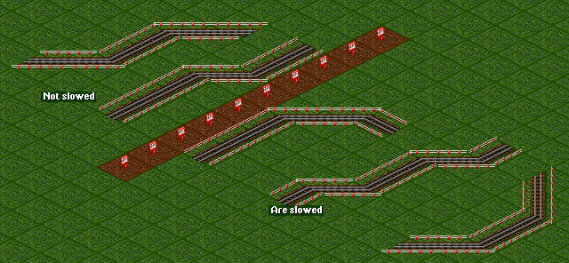

Max Curve Speed
Making trains keep their speed at maximum is key for keeping traffic fluent.
Contents
Numbering Convention
Because the most important part of everything happening on this page is creating an actual curve that demonstrates the building convention.
It is necessary know how to name curves by numbers. This is fairly simple if you turn on counting in the game interface.
Advanced settings -> Interface -> Display Options -> Display measurement tooltip...
Then we just use those values the game says. An exception is when the used curves are in between - one from each. In that case when, for example between 1 and 2, we say CL1.5 as the picture below demonstrates.

Travel speed mechanism
Here is how it is decided whether a train will slow down on a curve and by how much. Getting the Curve Speed value is shown below.

Curve Speed
The easiest way to know how fast a train can go through a curve is by simply testing, but it can also be counted by taking:
Base Curve Speed, multiplied by:
• monorail bonus - x1,5
• maglev bonus - x2
• tilt - x1,2
• short wagons - about x1,2 for "half-length wagons"
The base curve speed can be found on the OpenTTD wiki, but this graph demonstrates it too (plus monorail and maglev as well)

Special Curves
There are not always just full curves, but also Sbends and such. Counting their maximum speed is quite complicated so it is easier to just try it in game if the train slows down in the specific curve or not.


Side Notes
The real calculation OpenTTD does is counting wagons (vehicles) between curves, meaning that shorter wagons can travel through curves faster.
However, because the actual output of all the curve counting for us is setting up a convention how to build in a specific game, it is most useful to use counting by curve lengths (as shown in the beginning of this page) instead of counting vehicles.
From observation, half length wagons get about 20% bonus so it is something like if they had tilt. Those two bonuses stack however, so the combined bonus can be around 40%.
In the newGRF code, railtypes can allow higher speeds. The smallest possible is what normal and electrified rail has. [1]
See Also
- For some more detailed information see Mark's blog post: http://www.openttdcoop.org/blog/2009/05/13/about-curve-lengths/
- Webster's helper function
Categories: GuidesBasic networking